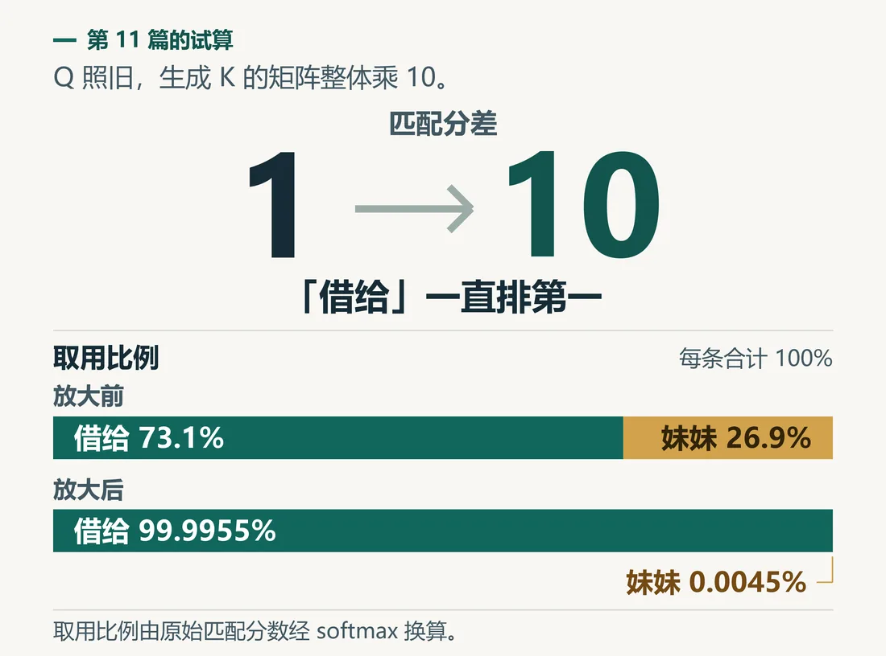
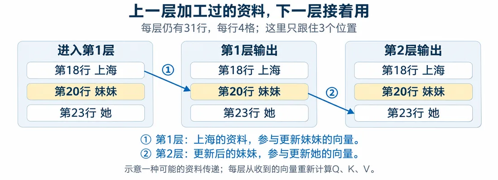

我们在这儿
从拆 Token 到注意力、FFN 加回，“书”这一行有了四个新数。
下一轮，要拿更新后的 31 行重算 Q、K。
可数字整体大一圈，取用比例就会变。
这一篇先把每行的尺度理一理。

这一篇要解决用层归一化稳住数值尺度，并搭出编码器一层。
大概阅读约 12–15 分钟
第 11 篇我们试过：Q 不变，K 放大 10 倍。
结果，“妹妹”的取用比例从近三成降到几乎为零。
名次照旧，比例差很多。
所以重算 Q、K 之前，先想办法把每一行数字的尺度理一理，别让数值越滚越大，毁掉后面的匹配。
拿“书”四格 A，每格先乘 2，再加 10，得到 B。两组内部的起伏一模一样。
最直白的想法，是把 B 整体除以一个数，压回 A 的大小。试试除以 10：
只除以一个数，中心和尺子顾不到两头。所以分两步：
再用 C 验证。它和 A 的平均数、标准差一样，高低却放在不同位置。
整理后，A、B 对上，C 仍分得开。
这两步叫标准化。
实际计算时，会在方差上加一个很小的正数 ε，再开根号。这样哪怕四格全一样，分母也不会是 0。
要是平均数、标准差这两个词已经有点陌生，别急，下面这个小实验能动手复习，点一点就明白了。
标准差在量一组数“散得有多开”。
计算顺序是：
先动手复习方差和标准差。再用 A、B、C 三排数，看标准化怎么把尺度对齐。
课堂示例数值：A、B、C 是为了看清标准化单独设的三排数。
这里可以先歇一下，下次从这一站接着读。
整理后，每行用自己的尺子量，按同一种规矩读。
可后面还可能需要：
所以得留下调整的地方。
给每一列留两个旋钮：
同一列的 31 行，共用这一对。
按行标准化，加上按列乘加，合起来叫层归一化（Layer Normalization，LN）。
跟着“书”走，一层里有两次整理：
一层里有多头自注意力、FFN，还有两次 LN，各有独立参数。
这一层的 Q、K、V 都用刚进来的 31 行算。
所以：
下一层拿更新后的数重算，才有机会查到。
第一层从入口的 31 行开始。再接一层，就把上一层输出交给它。每层都有自己独立的参数。
这么一层层堆起来，这条专门解读原句的通路，叫编码器。
走完后，行数、格数照旧。第几行，仍对应原句第几个位置。
回望一层里的四件事：

第一张图看一层怎么往下传。再把多层叠起来，看整条编码器。
这一篇收个尾
这一篇拿到：编码器一层的完整结构，以及堆叠起来的编码器。
下一篇接着看：给回答侧加因果掩码。